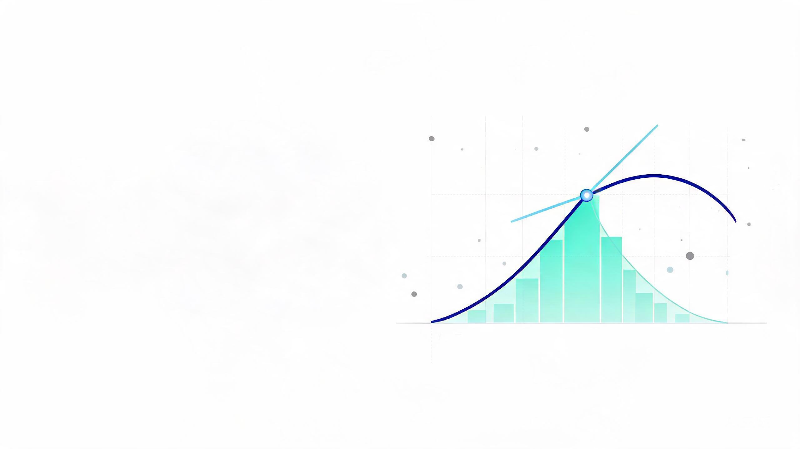

看见微积分
变化背后的数学
微积分并不神秘——它只回答两个问题：某一瞬间变化有多快（导数）， 以及把变化一点点加起来总共是多少（积分）。 这一页没有抽象定义，只有四个可以动手玩的图，请慢一点，拖一拖。

01从平均速度到瞬时速度：变化率
一辆车 1 小时开了 60 公里，平均速度是 60 km/h——但车速表的指针几乎不会一直指在 60 上。 车速表显示的是瞬时速度：某一瞬间、而不是一整段路程的快慢。
平均速度很好算：走过的位移差 ÷ 花费的时间差。设位移是 s、时间是 t，在 t 附近再取一小段时间 Δt：
几何上，这就是位移–时间图上连接 A、B 两点的割线的斜率。 现在把 Δt 一步步调小，看 B 点如何滑向 A 点——
你会看到：无论从哪个 Δt 出发，平均速度都稳定地趋向一个确定的值——这就是 t = 2 秒时的瞬时速度 4 m/s。 "让 Δt 无限趋近 0、看商趋向哪里"，这个想法就叫极限，写成：
02导数：切线的斜率
上一节的极限有一个正式名字——导数。对任意函数 f(x)：
几何意义非常纯粹：f′(x) 是曲线在 x 处切线的斜率。 切线陡、导数大；切线水平，导数为 0；曲线下坡，导数为负。 而如果让 x 扫过整条数轴，把每个点的斜率都记下来，就得到一条新曲线——导函数。
玩一下正弦波你会发现：曲线的最高点、最低点切线恰好水平（f′ = 0）， 最陡的地方对应导函数的极值。求导其实就是一条"翻译"规则：把"原函数长什么样"翻译成"它变化得有多快"。 常用函数的求导都可以背下来，比如 (xⁿ)′ = n·xⁿ⁻¹，sin 的导数是 cos 等。
03速度与加速度：层层求导
现在把第 1、2 章合起来。物理里已经替你准备好了最好的例子：
速度是位置的导数（位置变化得有多快），加速度是速度的导数（速度变化得有多快）。 一辆从静止开始匀加速的汽车，三个量随时间的变化如下——
三幅图读出一句话：s 图的斜率画出了 v 图，v 图的斜率画出了 a 图。 v(t) = 3t 是一条直线，斜率恒等于 3，所以加速度是常数 3 m/s²——这就是"匀加速"的含义； 而 s 图越来越陡，说明车越开越快。
04积分：把变化累加回来
求导回答"变化多快"，积分反过来回答"把这些变化累积起来，一共走了多远"。 已知每一瞬间的速度 v(t)，求 0 到 5 秒走过的路程——速度一直在变，没有现成公式，怎么办？
思路很笨但有效：把 5 秒切成许多小段，每一小段里速度近似不变， 路程 ≈ 速度 × 时间，也就是一个小矩形；再把所有矩形加起来。切得越细，误差越小——
n 越大，台阶越贴服曲线，和稳定地趋向 37.5 米。这个极限值就是定积分， 记作 ∫（一个拉长的 S，意为 sum，求和）：
几何上，定积分 = 速度曲线下方、时间轴上方的面积 = 路程。 这就是为什么"速度–时间图下的面积"在物理课里总等于位移。
05一枚硬币的两面：微积分基本定理
最后一件事，也是整个微积分最漂亮的结果。看这个来回：
从位置求导得到速度；把速度对时间积分，恰好又还原出位置：
这就是微积分基本定理：求导和积分互为逆运算。 它把"切"与"合"两个动作闭环，也把求面积这件麻烦事变成了找原函数—— 你在第 2 章背的求导公式，瞬间也成了算积分的钥匙。
06一页速查
| 概念 | 一句话直觉 | 记号 | 本页例子 |
|---|---|---|---|
| 平均变化率 | 一段区间里"平均每单位变化多少" | Δs / Δt | A→B 的平均速度 |
| 极限 | 让 Δ 无限变小，看比值稳定趋向哪里 | lim Δt→0 | 割线贴合切线 |
| 导数 | 瞬时变化率 = 切线斜率 | f′(x) = dy/dx | 瞬时速度 4 m/s |
| 二阶导数 | "变化率"自己的变化率 | s″(t) = a(t) | 加速度 3 m/s² |
| 定积分 | 无穷多个小变化累加 = 曲线下面积 | ∫₀⁵ v(t) dt | 5 秒走了 37.5 m |
| 基本定理 | 求导与积分互逆 | ∫ v dt = s(b) − s(a) | 速度积分还原位置 |